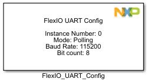
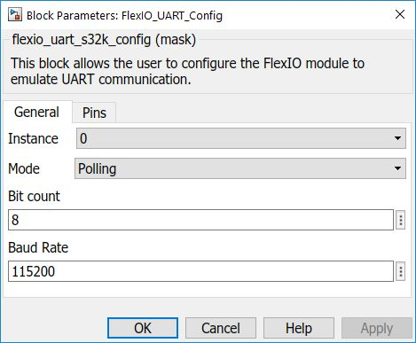
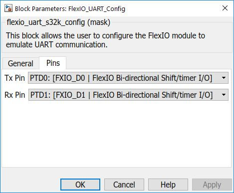

FLEXIO UART Configuration Block
This block allows the user to configure the FlexIO module to emulate UART communication.
The FlexIO module allows you to configure parameters of UART by selecting the baudrate and pins to be used (from the 8 flexio pins available on S32k).
Note:Parity bit is not supported.
Note:Only single stop bit is supported.
Block Image
Inputs:
- None
Outputs:
- None
Parameters and Dialog Box
The block dialog consists of the following tabs:
General
Instance
Select an instance of flexio to use (must be linked with Tx/Rx blocks).
Mode
Select either Polling or Interrupts mode, depending on what kind of Tx/Rx block you want to use, as follows:
- Transmit / Receive Blocks (blocking) - select POLLING
- Transmit ISR / Receive ISR Blocks (non-blocking) - select INTERRUPTS
Bit Count
Insert number of bits per word to be used (significant data payload from the UART data frame).
Note: Bit count must be betwen 1 and 16.
Baud Rate
Insert the baud rate for FlexIO UART (in Hz).
Note: Due to module limitation not any baud rate can be achieved. The driver will set a baud rate as close as possible to the requested baud rate, but there may still be substantial differences, for example if requesting a high baud rate while using a low-frequency FlexIO clock.
Pins
Pins
Select the flexio pins to be used from the dropdown list.
Block Dependency
- None
Block Miscellaneous Details
- None